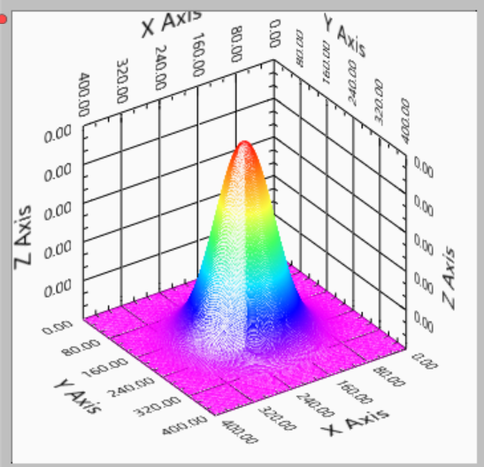

2次元ガウシアン画像の理論計算-01
2次元ガウシアンの積分
蛍光顕微鏡で蛍光像の観察を行う際に，重要なポイントは，
強度を計算したい
という局面が頻繁に出てきます．
その際に，どこまでを積分範囲にするか，という点でいつも悩みます．
と言うのも，ガウス分布なので，いつまでたっても（無限大になっても）強度は理論上０にならないからです．
そこで，一般的に使われるのが，
σ，もしくは２σまでの積分
です．
一次元の場合は，具体的な計算は，ここ，に記してあるように，
σ ： 68％
２σ ： 95％
と，２σまでの範囲ならほぼよいと考えてもいいことになります．
では，二次元の場合はどのように計算すればよいでしょう？

この数式は，
\( \Large Z= \frac{1}{ \sqrt{2 \ \pi \ \sigma_x^2}} e^{- \frac{(x-x_0)^2}{2 \ \sigma_x^2}} \times \frac{1}{ \sqrt{2 \ \pi \ \sigma_y^2}} e^{- \frac{(y-y_0)^2}{2 \ \sigma_y^2}}\)
で表すことができます．簡単に，原点を０としてx,yのσを等しいとすれば，
\( \Large Z= \frac{1}{ 2 \ \pi \ \sigma^2} e^{- \frac{x^2+y^2}{2 \ \sigma^2}} \)
となります．
では，中心からσまでの範囲での積分はどうなるのでしょうか？
私も勘違いしましたが，
\( \Large \displaystyle \int_{- \sigma}^{\sigma} \int_{- \sigma}^{\sigma} \frac{1}{ 2 \ \pi \ \sigma^2} e^{- \frac{x^2+y^2}{2 \ \sigma^2}} dx dy
= \int_{- \sigma}^{\sigma}
\frac{1}{ \sqrt{2 \ \pi \ \sigma^2}} e^{- \frac{x^2}{2 \ \sigma^2}} dx \times \int_{- \sigma}^{\sigma}
\frac{1}{ \sqrt{2 \ \pi \ \sigma^2}} e^{- \frac{y^2}{2 \ \sigma^2}} dy \)
としてはいけません！
このままだと，正方形のエリア，を積分してしまうことになるからです．
半径σ内の計算ですので，ｘとｙは独立ではないのです．
その関係は，半径ｒの場合，
\( \Large x^2 + y^2 = r^2 \)
\( \Large x = \sqrt{r^2 - y^2} \)
となるので，
\( \Large \displaystyle \int_{- \sigma}^{\sigma} \int_{- \sigma}^{\sigma} \frac{1}{ 2 \ \pi \ \sigma^2} e^{- \frac{x^2+y^2}{2 \ \sigma^2}} dx dy
= \displaystyle \int_{- \sigma}^{\sigma} \int_{- \sqrt{\sigma^2-y^2}}^{\sqrt{\sigma^2-y^2}} \frac{1}{ 2 \ \pi \ \sigma^2} e^{- \frac{x^2+y^2}{2 \ \sigma^2}} dx dy \)
となるのが正解です．
しかし！，この最初の定積分で誤差関数を含む式となり，さらにそれを積分となるはとてもややこしいですね．．．．
ですので，極座標で計算してみることにします．
次ページをご覧ください．